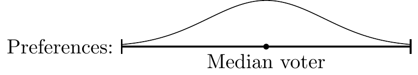
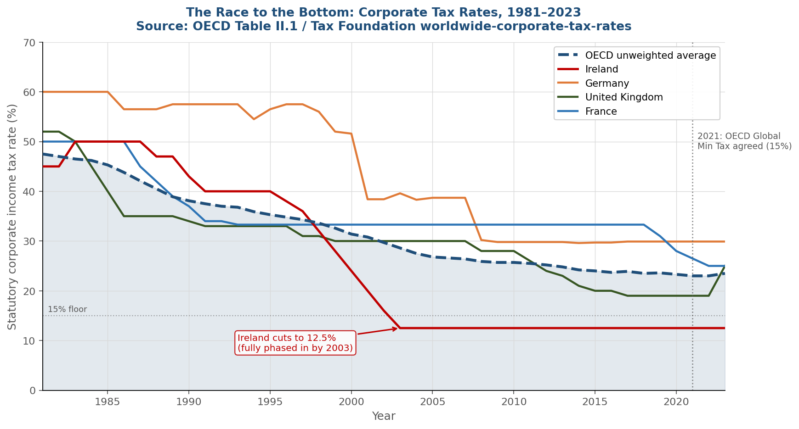
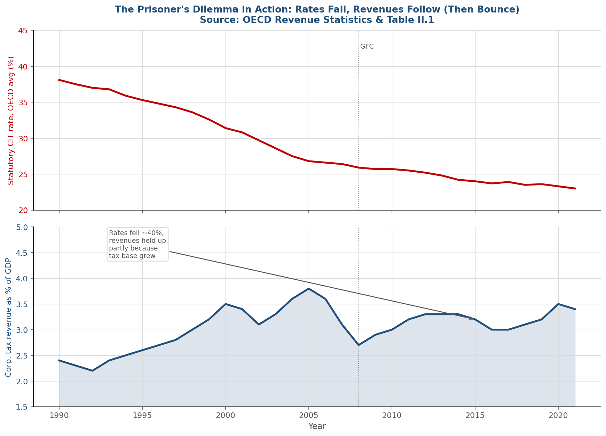
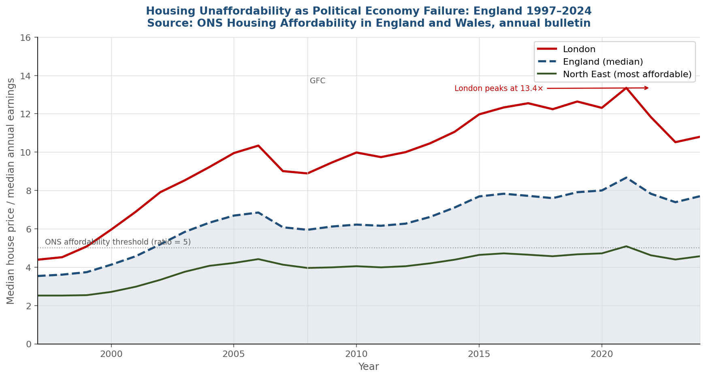
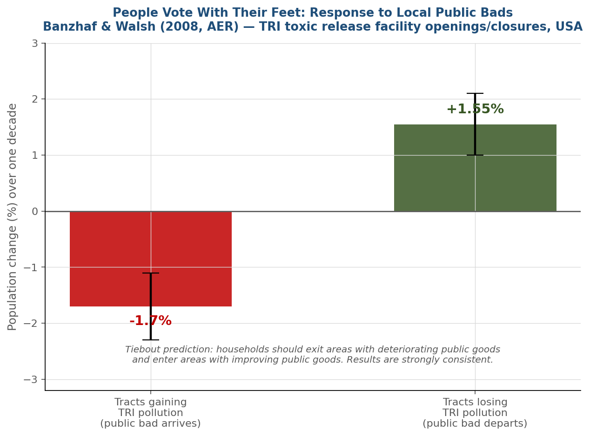
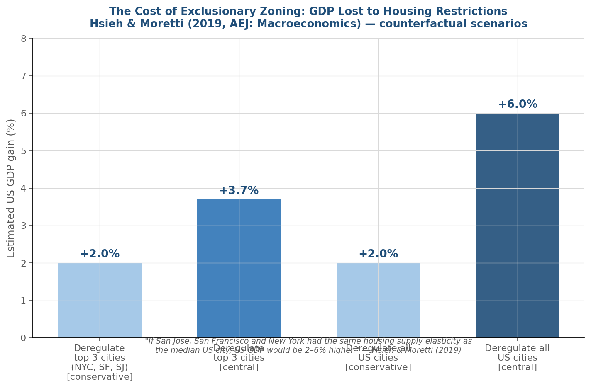

From Tiebout to Tax Competition: A Game-Theoretic Perspective
The city is not just geography — it is a strategic game played by households, firms, and governments.
The scenario
A city council wants to build a park. They ask residents:
“How much would you pay for this park?”
The problem: since the park is free for everyone once built, a rational resident has every incentive to understate their true willingness to pay.
“Let someone else pay, I’ll enjoy it anyway.”
This is the free-rider problem — the central obstacle in the economics of public goods.
What makes a good “public”?
Non-excludable — once provided, you cannot stop anyone from using it
Non-rival — your use does not reduce mine
Examples: street lighting, national defence, clean air, a park
Paul Samuelson (1954) proved the efficiency condition:
\[\sum_{i=1}^{n} MRS_i = MRT\]
In plain English: the sum of all individuals’ marginal willingness to pay must equal the marginal cost of providing the good.
The catch: the government does not know individual \(MRS_i\).
Asking people to report them is a game they will systematically lose — the dominant strategy is to underreport.
Samuelson (1954)
“The pure theory of public expenditure”
Review of Economics and Statistics
No decentralised pricing system can achieve efficient provision of pure public goods.
Clarke (1971) and Groves (1973) developed the pivotal mechanism:
Each agent pays a “tax” equal to the harm they impose on others by their vote.
→ Truth-telling becomes a dominant strategy
Does this sound familiar?
It should — the Clarke–Groves–Vickrey (VCG) mechanism is the same logic as the second-price (Vickrey) auction, generalised to public goods.
The city public goods problem is an auction design problem.
The VCG connection
In a second-price auction, you pay the second-highest bid = the externality you impose on others.
Truth-telling is dominant because your payment does not depend on your own report.
Same structure in the pivotal mechanism for public goods.
Three individuals (A, B, C) decide whether to build a bridge costing 300.
| Person | Declared Value |
|---|---|
| A | 150 |
| B | 120 |
| C | 80 |
Total declared benefit = 350 > 300 \(\Rightarrow\) Bridge is built.
Clarke tax: each person pays the “damage” they impose on others.
| Person | Without them | Others’ total | Pivotal? | Tax = \(300 - \sum_{j \neq i} v_j\) |
|---|---|---|---|---|
| A | B + C | 200 | Yes | \(300 - 200 = 100\) |
| B | A + C | 230 | Yes | \(300 - 230 = 70\) |
| C | A + B | 270 | Yes | \(300 - 270 = 30\) |
Why is honesty optimal? Your tax depends on others’ reports, not yours. Your report only affects the decision — and the only way to get the right decision for you is to tell the truth. \(\Rightarrow\) Dominant strategy: truthful revelation.
Charles Tiebout’s 1956 paper proposed a beautiful solution that bypasses the preference revelation problem entirely.
The insight: if there are many local governments, each offering a different bundle of taxes and public services, households will naturally sort themselves by choosing where to live.
Location choice reveals preferences — no asking required.
Tiebout, C. (1956). A pure theory of local expenditures. Journal of Political Economy, 64(5), 416–424.
The apple-and-orange analogy 🍎🍊
Imagine two market stalls side by side: one sells apples, one sells oranges.
Apple-lovers go to the apple stall. Orange-lovers go to the orange stall. Nobody is forced to buy what they do not want.
Tiebout says local governments are like these stalls. If there are enough of them, households self-sort into their preferred “stall”.
Under Tiebout’s assumptions, mobility substitutes for costly truth-telling:
| Samuelson’s world | Tiebout’s world |
|---|---|
| Ask people what they want | Let them vote with their feet |
| Strategic misreporting | Location choice reveals truth |
| Centralised optimum hard to find | Decentralised sorting achieves it |
Under full assumptions (perfect mobility, full information, many jurisdictions, no spillovers, no economies of scale) → Pareto-efficient provision of local public goods.
The empirical question
Does Tiebout sorting actually happen?
Yes, partially:
But with limits:
1. Moving is costly
Real households cannot costlessly switch jurisdictions. Homeowners especially face: transaction costs, attachment to community, school disruption, job constraints.
Unlike our apple buyer, most residents are largely stuck.
Fischel (2001): The “Homevoter Hypothesis”: homeowners systematically oppose policies that might lower property values, distorting the sorting mechanism.
2. Fiscal externalities
What Town A does affects Town B.
Like an apple vendor whose fermented apples smell up the entire market.
Town A accepts a polluting factory → Town B bears the pollution costs. Town A does not count these when deciding.
→ Individually rational decisions are collectively inefficient
When capital is mobile, jurisdictions compete for it by cutting taxes.
| B: High tax | B: Low tax | |
|---|---|---|
| A: High tax | Both fund good services | B gains firms; A loses |
| A: Low tax | A gains firms; B loses | Both lose revenue |
This is a classic Prisoner’s Dilemma:
Zodrow & Mieszkowski (1986): formalised this — tax competition leads to underprovision of local public goods.
The fourth failure: stratification
Tiebout sorting is not just inefficient — it is inequitable.
Rich jurisdictions → high tax base → good schools
Poor jurisdictions → low tax base → poor services
Epple & Romer (1991): income stratification across jurisdictions is an equilibrium outcome of Tiebout sorting.
Chetty, Hendren & Katz (2016): moving to a higher-income neighbourhood has large positive causal effects on children’s long-run earnings.

Source: OECD Table II.1 / Tax Foundation Worldwide Corporate Tax Rates dataset. All statutory rates.
The strategy: Ireland cut its corporate tax rate to 12.5% while EU partners maintained 25–40%.
The payoff: - Apple, Google, Facebook, LinkedIn → European HQs in Dublin - Ireland’s GDP per capita grew from ~70% of EU average in 1990 to ~200% by 2019
The externality: - Other EU member states lost tax base - Competitive pressure on all EU countries to cut their own rates
The legal response: European Commission (2016), State Aid Case SA.38373 → ruled Apple’s Irish arrangements illegal state aid, ordered €13 billion in back taxes.
Devereux, Lockwood & Redoano (2008)
Journal of Public Economics 92(5–6)
Studied OECD countries over several decades.
Finding: a country is significantly more likely to cut its statutory corporate rate in response to rate cuts by neighbours.
→ Countries are playing a repeated game and the equilibrium involves rates below what a global social planner would choose.

Source: OECD Revenue Statistics (Table 1200) & Table II.1. Rates fell ~40%; revenues held up partially because the tax base broadened.
The 2021 OECD/G20 Global Minimum Tax (Pillar Two)
Over 140 countries agreed to a 15% floor on corporate taxation for multinationals with revenue > €750m.
Game-theoretic reading:
This is an attempt to move from the defection equilibrium to the cooperative equilibrium by binding commitment, the same logic as a cartel agreement maintaining price above competitive level, but in reverse.
By making defection below 15% irrational (no gains, the other country collects the top-up), the agreement stabilises a higher-tax equilibrium.
The folk theorem connection
In a repeated prisoner’s dilemma, cooperation can be sustained as a Nash equilibrium if players are sufficiently patient (discount factor \(\delta\) high enough).
International tax coordination is the institutional mechanism that makes commitments credible, substituting for the infinitely-repeated game logic.
Classical result (Hotelling 1929; Black 1948; Downs 1957):
In a majority vote over a single policy dimension, the preferred outcome of the median voter wins.
Applied to local public goods: the level of school spending, park maintenance, or zoning in a municipality reflects the preference of the median resident.
Evidence: Bergstrom & Goodman (1973), strong support for median voter determination of local government spending in US municipalities.
Important caveat: Romer & Rosenthal (1979), agenda-setting power of bureaucrats can shift outcomes away from the median voter’s ideal point.
The geometry

Single-peaked preferences + majority voting → median voter’s ideal point is the Condorcet winner.
Works cleanly in one dimension. Breaks down with multi-dimensional policy spaces (Arrow’s impossibility theorem lurks nearby).
Fischel’s Homevoter Hypothesis (2001)
In suburban US municipalities, homeowners are the decisive median voters. Their primary asset is their house.
→ They vote to protect property values
→ They systematically oppose zoning that allows apartments, social housing, or higher density
→ Result: exclusionary zoning
Regulatory constraints, driven by existing homeowner political influence, are the primary driver of housing undersupply in England, more important than physical geography.
“South East house prices would have been ~25% lower in 2008 if planning regulations had been as permissive as in the North East.”

Source: ONS Housing Affordability in England and Wales, annual bulletin

Banzhaf & Walsh (2008) — TRI toxic release facility openings/closures across US communities. Tiebout’s mechanism confirmed: households exit areas with deteriorating public goods, enter areas with improving ones.
Contract theory reading of zoning
Zoning rules are an incomplete contract between the city and residents/developers.
Like all incomplete contracts: impossible to specify all future contingencies in advance.
Residual control rights (what happens in unspecified circumstances) are allocated politically.
→ Existing homeowners use political power to write residual rights in their favour
→ They capture regulatory rent

Glaeser & Gyourko (2003): in many US/EU cities, house prices exceed construction costs by 50%+. The wedge = value of the regulatory permit, monopolised through the political process.
What we covered
The economics of local public goods is a story about information and incentives — the same themes running through mechanism design, auction theory, and contract theory.
| Problem | Framework |
|---|---|
| Preference revelation | VCG / mechanism design |
| Tiebout sorting | Market mechanism |
| Tax competition | Prisoner’s dilemma |
| Median voter bias | Political economy |
| Zoning restrictions | Incomplete contracts |
Why it matters beyond theory
The Tiebout model assumes no economies of scale in public good provision. How does this assumption interact with city size? Can a city be “too small” for efficient Tiebout sorting?
The median voter theorem predicts that homeowners dominate suburban zoning decisions. In the Czech Republic and Portugal, where homeownership rates are high (above 70%), what does this predict for housing supply over the next decade? What extra role would public housing play in this context?
The VCG mechanism solves the public goods revelation problem in theory. Why is it almost never used in practice? What implementation problems arise?
BIP Planning and Economics of Cities
Prague University of Economics and Business | March 2026
“The city is not just geography — it is a strategic game played by households, firms, and governments.”
BIP Prague 2026 | Public Goods & Political Economy of Cities